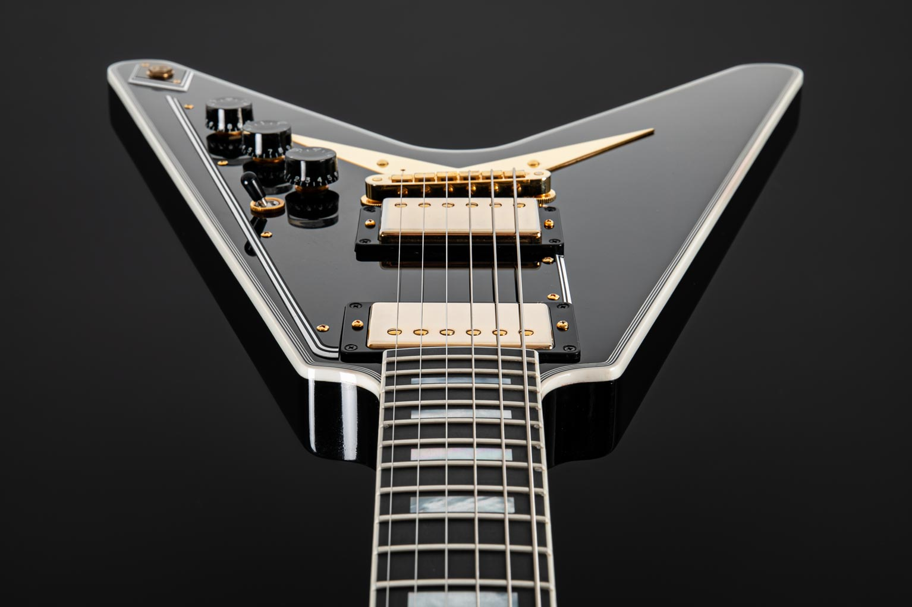

A Flying V é uma guitarra criada no ano de 1958 pela Gibson,também conhecida como V Factor
Seu primeiro protótipo foi feito em 1957 junto aos modelos futura, X-plorer e Moderne.Vieram com um objetivo de dar uma cara mais "futura" a Gibson.
Os modelos de guitarra mais bonitas pela pesquisa
Veja o site da GIBSON
Confira também no site do Mercado Livre
Confira na Ebay
veja meu site aqui
ir para a página 2Perfil – SlimTaper.Material da Escala – Rosewood,Comprimento da Escala – 628,65mm,Raio da Escala – 12” Quantidade de Trastes – 22,Trastes – Medium Jumbo.Largura da Pestana (Nut) – 43,05 mm,Largura do final da escala – 57,4 mm.